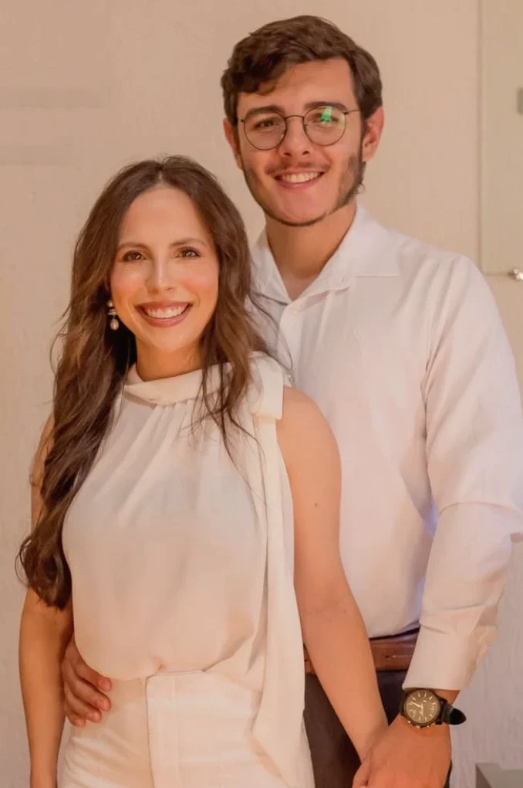
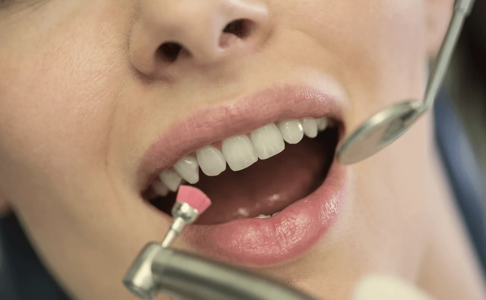
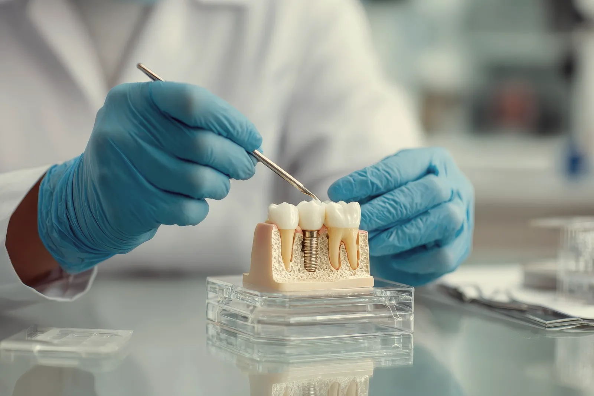
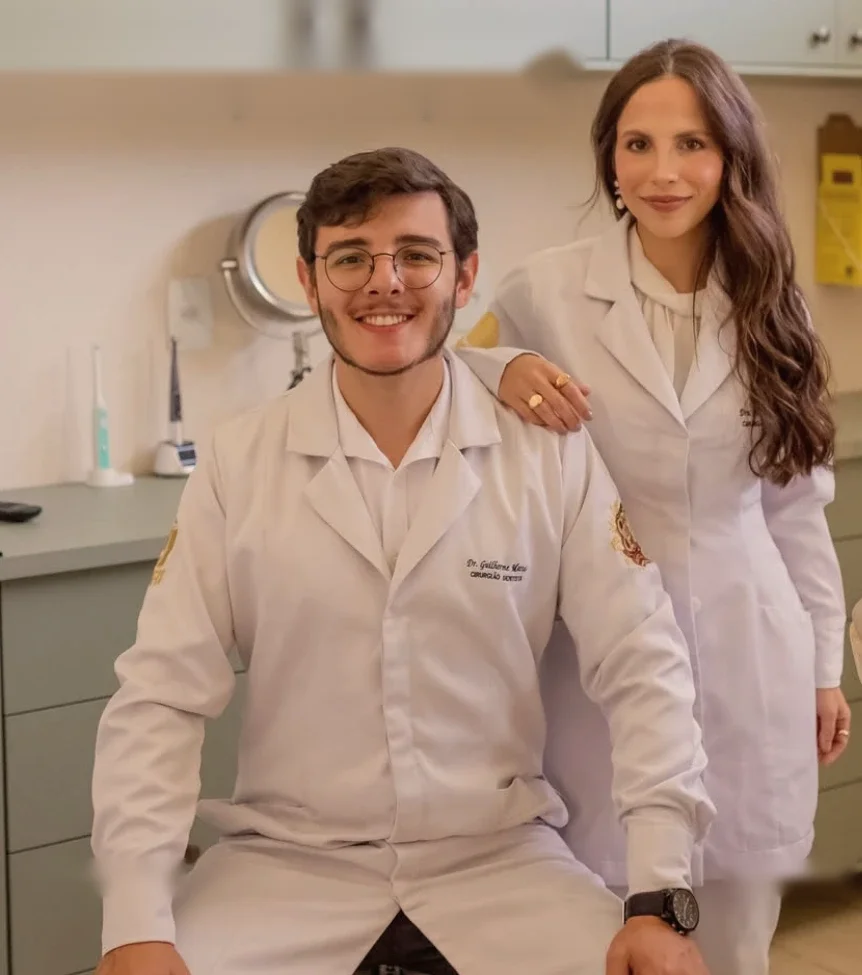
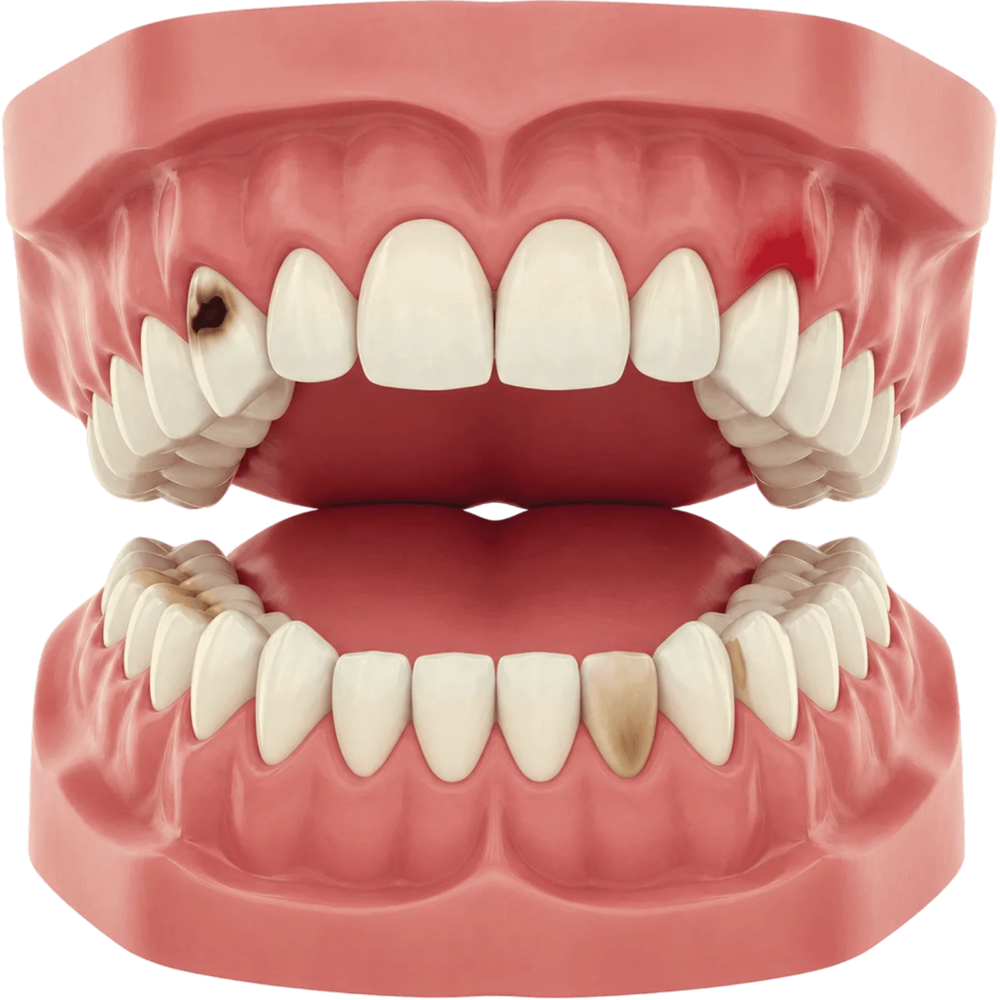
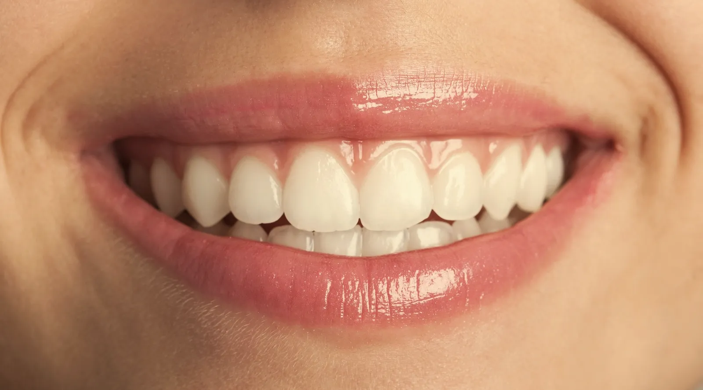
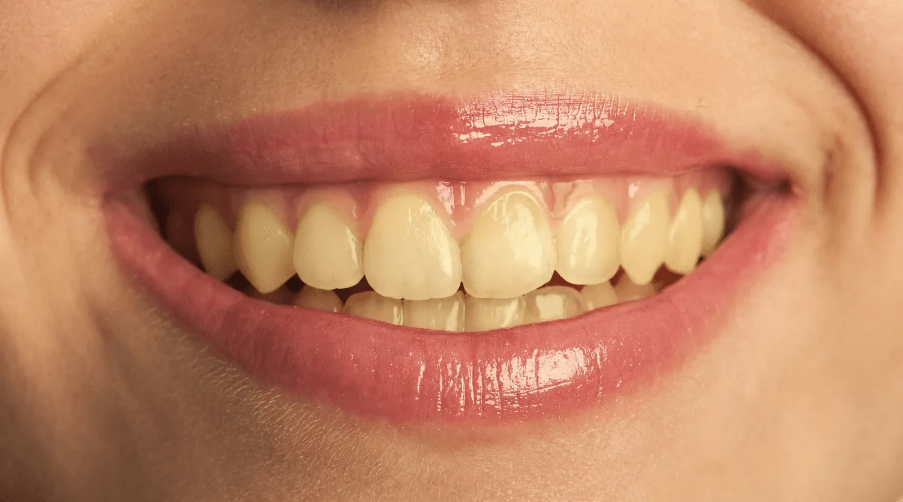

1.
Como o dentista fala
2.
Como a gente fala
Estética dental e implantes · São Carlos, SP
Somos a Dra. Pietra e o Dr. Guilherme. Explicamos cada etapa em português claro, mostramos as opções e só indicamos o que faríamos em alguém que a gente ama.
Tire suas dúvidas antes de agendar. Sem compromisso.

Adiar o
 
Uma cárie pequena se resolve com uma restauração em uma consulta. Adiada, pode chegar ao canal. Quanto antes a gente conversa, mais simples fica o caminho.
01/07Quem cuida de você
Atendemos juntos porque acreditamos que um bom tratamento começa com uma boa conversa. Cada caso passa pelo olhar de nós dois antes de virar plano. É assim que a gente cuida do seu sorriso como se fosse o nosso.
“Não vou indicar a você um procedimento que eu não indicaria para alguém que eu amo.”

02/07Tratamentos
Um tratamento, uma frase, zero termo técnico. Toque em “perguntar” e a conversa no WhatsApp já abre com o assunto.
Mudar cor, forma e tamanho dos dentes com um resultado que parece seu, não de outra pessoa.
Lâminas finas de porcelana, planejadas dente a dente.
Perguntar sobre lentesRepor o dente que falta com uma raiz fixa, para voltar a mastigar e sorrir sem pensar nisso.
Raiz de titânio e coroa de cerâmica no tom dos seus dentes.
Perguntar sobre implantesDentes mais claros com acompanhamento de perto, para controlar a sensibilidade do começo ao fim.
Cor planejada para parecer natural, nunca artificial.
Perguntar sobre clareamentoCorrigir cárie, lasca e pequeno desgaste no mesmo tom do seu dente, sem aquele remendo aparente.
Resolve na mesma consulta na maioria dos casos.
Perguntar sobre restauraçõesA consulta que evita as outras. Tártaro, gengiva e revisão, antes que vire um problema maior.
O jeito mais barato de cuidar do sorriso.
Perguntar sobre limpeza03/07Antes do “bom dia”
Alguns sinais aparecem muito antes da dor. Escolha um sinal e veja de perto o que ele costuma querer dizer.
O que pode ser
Início de cárie.
Quando pega cedo, resolve com uma restauração pequena, no tom do dente, em uma consulta.

04/07Dicionário descomplicado
Sete palavras que todo paciente já ouviu na cadeira e ninguém explicou direito.
Como o dentista fala
Como a gente fala
05/07Planejamento
Na avaliação a gente mostra o que dá para mudar, o que não dá e quanto tempo leva. Sem promessa de sorriso de revista. Com resultado que combina com o seu rosto.


06/07Como funciona
Conta o que está incomodando. Não precisa saber o nome técnico, isso é com a gente.
Examinamos, conversamos e você pergunta tudo o que quiser. Pergunta boba não existe aqui.
Opções, etapas, prazos e valores explicados antes de qualquer procedimento.
Depois do tratamento vem o acompanhamento, para o resultado durar.
07/07Dúvidas frequentes
Não achou a sua? Manda pra gente.
Mandar minha perguntaPorque o tártaro é placa que endureceu nos lugares onde a escova e o fio não chegam direito. Depois de duro, só sai com limpeza profissional. A boa notícia: com a técnica certa em casa e revisões no tempo certo, ele volta bem menos.
Na maioria dos casos o desgaste é mínimo ou nenhum. Mas nem todo sorriso tem indicação para lente. Isso é decidido na avaliação, olhando o seu caso de perto.
O procedimento é feito com anestesia local. Depois, o desconforto costuma ser leve e controlado com a medicação que indicamos. A gente explica cada etapa antes, para você chegar tranquilo.
Depende do que o seu sorriso precisa. Na avaliação você recebe o plano com valores e formas de pagamento, antes de decidir qualquer coisa.
Em São Carlos, SP. Chama a gente no WhatsApp que enviamos o endereço e os horários disponíveis.
Quando o paciente chega e diz
“Uma pessoa me recomendou vocês.”
Avaliação · São Carlos, SP
Com a Dra. Pietra e o Dr. Guilherme, sem pressa.